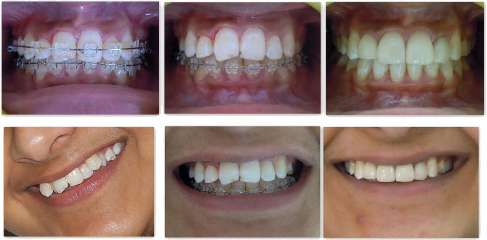
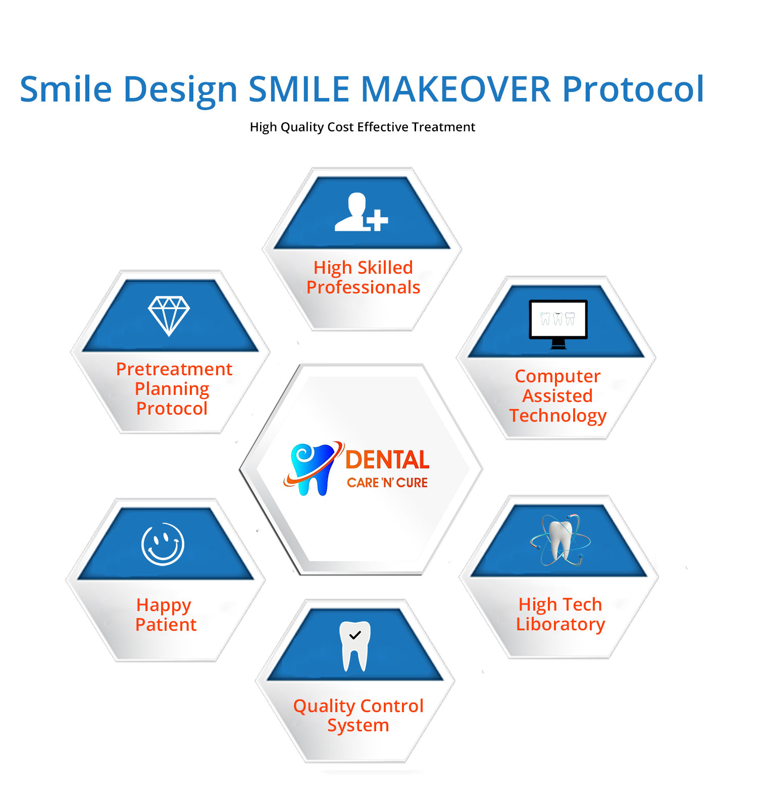

Cosmetic solutions by Dr. Mansi Arora Punia. A Smile Makeover gives you the opportunity improve your appearance, boost your self-confidence and improve your quality of life. If you tend to hide your mouth or cover your smile because you're embarrassed about the appearance of your teeth, consider a fresh smile as a way of improving yourself and smile without hesitation.
But what does smile design actually mean?In the everyday language, the term ‘smile design’ is often used as the synonym of a dental treatment with esthetic purposes.
However, smile design is actually a process before the treatment starts: Smile design is the planning and pre-visualization of the desired end result of an esthetic dental treatment targeting a more harmonious state instead of the current disharmony, according to the rules of facial, smile, tooth and gingival harmony and the individual needs of the patient, paying particular attention to the functional aspects and the feasibility.
-- If You Have Yellow Teeth
--Size Of Teeth Too Small (By Birth/Or Generally In Case Of Nonvegetarians Middle Age People)
--Malformed/Crooked/Uneven Teeth/Non Aligned Teeth
(Since Childhood Or In Adults After Extraction Of One Or More Teeth)
--Unable To Close Lips Due To Front Teeth Out
-- Wrinkles Around The Mouth
-- All Age Groups
--Boost Confidence; Appearance; Smile And Personality
-- Youthful Appearance Of Face
--Always Customized And Depends Upon Number Of Teeth And The Treatment Procedure Required.
Dentistry is no longer just a case of filling and taking out teeth. Nowadays many people turn to cosmetic dentistry, or ‘aesthetic dentistry', as a way of improving their appearance. They do this in the same way they might use cosmetic surgery or even a new hairstyle. The treatments can be used to straighten, lighten, reshape and repair teeth. Cosmetic treatments include veneers, crowns, bridges, tooth-coloured fillings, Dental Implant and Teeth Whitening.

